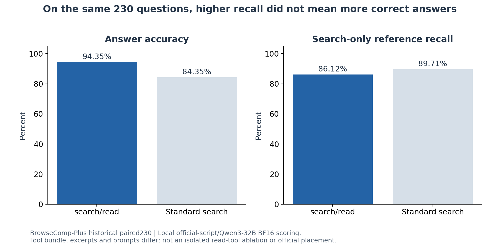

The RAG result list is not the evidence
A 230-question experiment with the same BM25 implementation and two different tool interfaces.
This article was prepared with AI assistance from Minimal RAG’s recorded experiments. The numbers were checked against the linked project records.
I would prioritize how evidence is located and delivered before adding another retrieval component to this project. In a historical paired comparison on 230 BrowseComp-Plus questions, Minimal RAG's search/read interface answered 217 correctly, versus 194 for a standard search interface over the same BM25 ranking implementation and core loop.
That is evidence for taking the tool interface seriously. It is not an isolated estimate of the read tool's effect: returned text, tool parameters, and prompts differed together.
A small loop can leave meaningful choices to the model
The core loop passes messages and tool definitions to the model, executes requested tools, returns observations, and stops when the model answers. The model chooses queries, sources, reading ranges, and continuation.
Question → Model → Search or Read → Source observation → Model → Answer
The index uses approximately 1,600-character chunks with 200-character overlap while preserving full source documents. An indexed chunk is a locator. Index chunk size, search excerpt length, and read length are distinct controls, even though all are often discussed loosely as “chunk size.”
The interfaces exposed different opportunities
Arm A offered the project's search/read tools. Search could return one to twenty distinct documents with 2,000-character excerpts, offsets, and document lengths. It supported pagination and searches scoped to a document. Read defaulted to 4,000 characters and allowed continuation.
Arm B implemented the standard search interface over the same BM25 ranking implementation: five results per query, each containing the beginning of the document capped at 512 tokens, with no separate read tool. Two thousand characters and 512 tokens are different units and cannot be turned directly into a length ratio.
A correct document in B's result list could still expose only an irrelevant opening. A could enter near a match and read further. However, A also had more controls and a different prompt environment. The experiment tested that combination.
Compare the same 230 questions
Both arms used gpt-6.1-sol with high reasoning effort, at most 30 model calls, and a fixed corpus without external web access. Answers were scored locally with a pinned official script and Qwen3-32B BF16. This was not a maintainer-verified leaderboard result.
| Paired230 measurement | Project search/read | Standard search |
|---|---|---|
| Correct answers | 217 | 194 |
| Accuracy | 94.35% | 84.35% |
| Mean searches | 12.16 | 19.84 |
| Mean reads | 3.33 | 0 |
| Mean official search-only reference recall | 86.12% | 89.71% |
The project interface had 28 wins, five losses, and 197 ties. The original paired-bootstrap interval for its +10.00-point accuracy difference was +5.22 to +14.78 points. Every row above uses the same 230 questions; it does not compare A's full 830-question population with B's subset.

The last row is revealing: standard search had higher reference-document recall. That metric records search-returned document IDs. It does not say whether the relevant passage was delivered, nor fully characterize evidence obtained through reading.
More returned reference IDs did not correspond to more correct answers in this comparison. Delivery and continuation deserve evaluation alongside ranking quality. Aggregate results alone still cannot identify which interface feature caused the entire improvement.
Keep continuation explicit
The interface information I value most is a stable source ID, the actual returned source span, document length or truncation state, and parameters for continuing. Together they let the model act on whether the visible evidence is sufficient.
If a passage ends after 4,000 characters, the tool can indicate that more text exists and allow reading from an explicit offset. If a source is relevant but the necessary condition is missing, scoped search can locate it without restarting a global search. If relevant candidates do not cover the whole question, pagination offers another action besides guessing new keywords.
These capabilities need not impose a planner with category-specific branches. They provide actions the model can choose. The hope that future models will use those actions better remains a design goal: this project has not yet established it through a controlled model-only upgrade experiment.
Keep the score attached to its experiment
The 217/230 versus 194/230 comparison is a historical interface experiment. It is not the newer full-benchmark result. Its questions were used during development, rather than held out from all design decisions, and the interval does not capture selection effects or generation variability.
A separate, later frozen Codex run answered 781/830 BrowseComp-Plus questions correctly (94.10%), using the official scoring script run by this project. Maintainer verification is still pending. Eight technical generation failures were retried with the same configuration; treating those retries as failures gives 775/830 (93.37%).
The current direct Responses API backend has only a 30-question Enterprise migration check. Neither the historical interface result nor the later full Codex score transfers automatically to that backend or an open call budget.
This experiment supports evaluating the evidence interface alongside the retriever. It does not establish that BM25 universally beats dense retrieval, nor that the read tool alone produced the entire improvement.
Try the small loop
The repository includes an offline demo. It builds a real SQLite index from bundled sample documents and replays search, read, and a cited answer. It does not call a model and is not a live benchmark run. With Python 3.12 or newer:
git clone https://github.com/hxli2005/minimal-rag.git
cd minimal-rag
python3.12 -m venv .venv
.venv/bin/python -m pip install -e .
.venv/bin/python -m minimal_rag demo
Project and recorded walkthrough · Source repository
Inspect the evidence
- Historical paired comparison and evaluation protocol
- Paired counts, bootstrap setup, and budget accounting
- The standard search interface used in the comparison
- Later 781/830 frozen-run scoring record
- Reproduction guide and backend boundaries
Evidence checked October 18, 2026. No new model evaluations were run for this article.